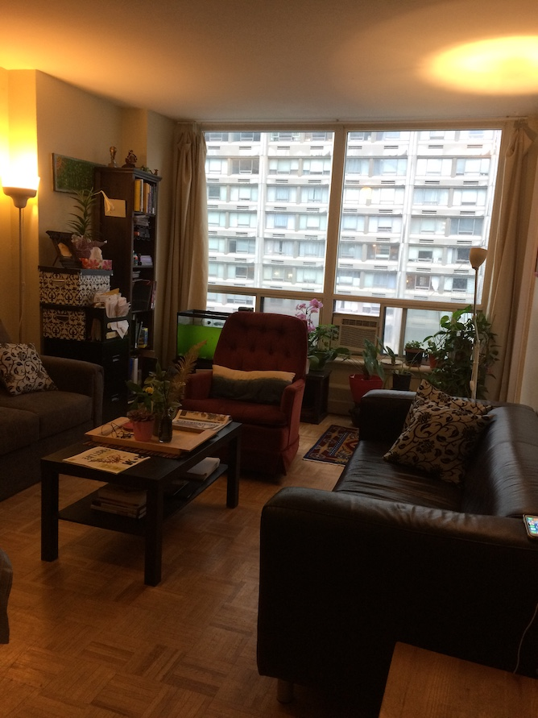
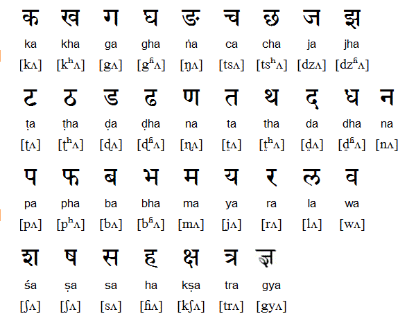

Learn Nepali
Start Learning
Learning new language is a thrilling experience. I started learning 4 new languages in the summer of 2017: two human ones (French and Spanish), and two computer ones (JavaScript and Python). I learned all these languages with resources available on the internet. I made this app by using my insights and knowledge gained freely. Hence, I will try my best to make most of this app's lessons and other materials for free.
If you are totally new to Nepali language, you might want to have some idea about this language. Click 'language' link above for that.
Once you have some familiarity, you can start playing by pressing the 'Lessons' link.
Blogs
The Thrill of Learning Language
I now know many languages besides my native Nepali. I know Hindi. I also know some bit of Bhojpuri and Maithili. In the last one year, I learned two other languages, thanks to the internet: French and Spanish. I learned them on Duolingo.
I have developed this app after I acquired the thrill of learning new languages on Duolingo. I am convinced that anyone can learn new languages fast, provided they have right tools at hand, and they are enthusiastic. Learning languages expands your world, and makes available resources that you did not know existed.Besides the two human languages, I also learned two computer languages in the last one year: JavaScript and Python. I made this app using JavaScript. I also read French novels, listen to podcasts in French, and watch French movies.
If you truly want to know what's going on in Nepal, then learning Nepali is a must. The written Nepali has exploded in the scene. People have been sharing their ideas and life on the social media. Nepal's publishing has flourished in the last three decades.
Given my experience of learning the four languages(two human and two computer languages), I am totally convinced that, even if you are completely new to Nepali language, you can master it fast with good practice
I will try to put into use my own experience of learning completely new languages in designing lessons and other materials.
Let's begin! Click 'home'. Let's embark on this thrilling journey!
Nepali Language
Vowels, syllables, and numbers
The building blocks of Nepali language are: 12 vowels, 36 root syllables and decimal numerical system. We will explore the numerical system later in the lessons. Click the sections below for more details on vowels, syllables, and conjugated syllables.
Vowels
Nepali Language has 12 vowels. They form the primary building block. These vowels work as independent letters. They also conjugate with root consonants to form root syllables and conjugated syllables (see below)
Root Syllables
Nepali has 36 root syllables. They are formed by combining root consonants and first vowel 'अ'. For example, क (ka) is made up of क् (k) (root consonant) + अ (a)(vowel). Same goes with other root syllables.
While the above table provides romanized version of corresponding syllables, the figure
below give their more precise pronounciation.

Conjugated Syllables
Each of the 36 primary syllables have 12 conjugated syllables. These conjugated syllables are made up of primary consonants and combined with 12 vowels. Examples: क् (primary consonant) + अ = क; ख् (primary consonant) + आ = खा, etc.. This means, once you know how to compose 12-iterations of one root syllable, you will be able to compose all other conjugated syllables.
You might want to print these vowels and root syllables and put it up on your wall by your computer.
If you are ready to embark learning, please click 'Lesson' above.